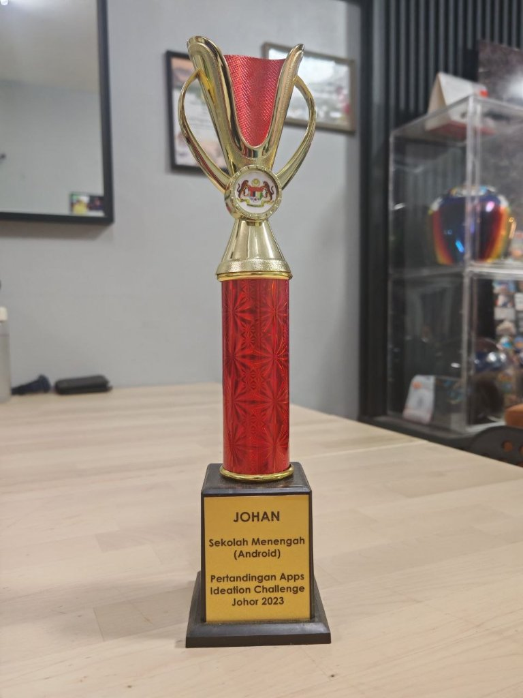
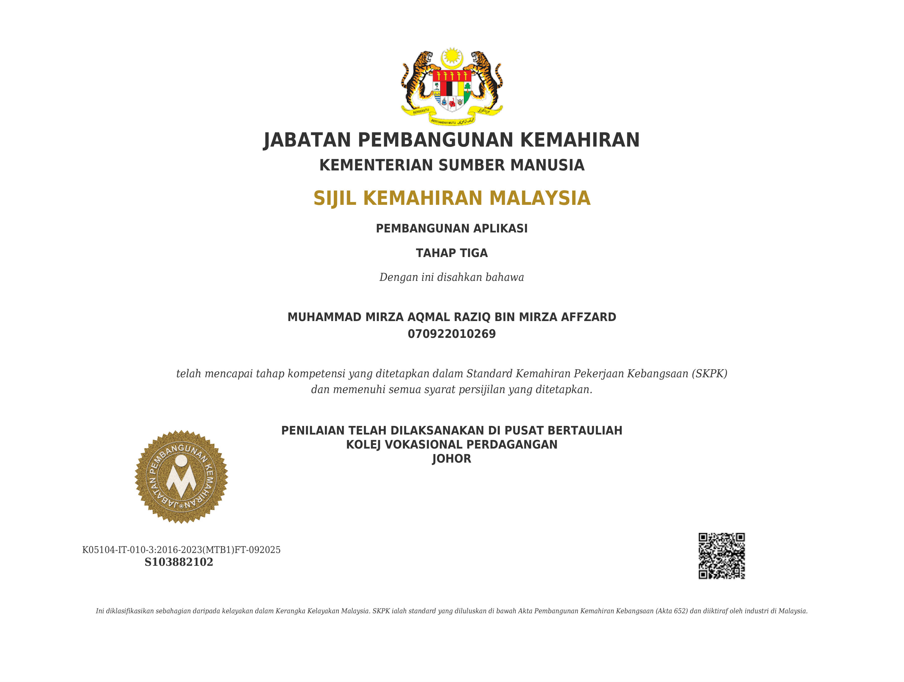
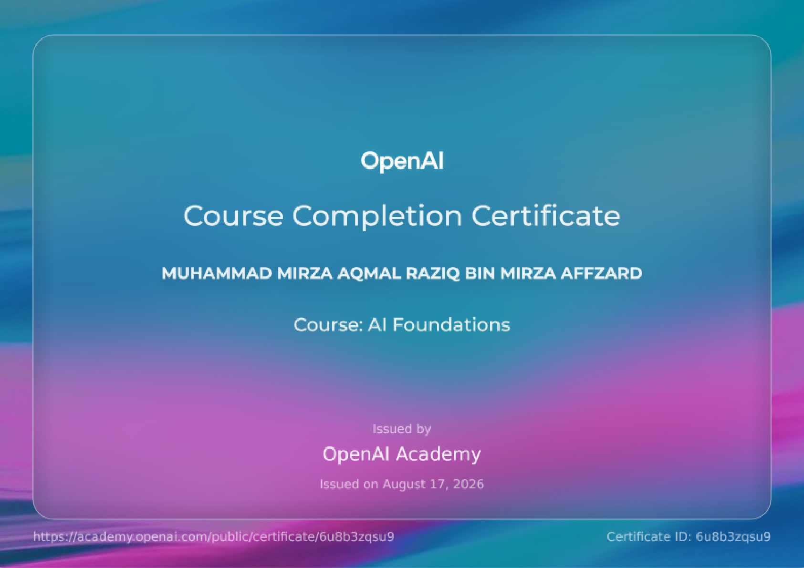
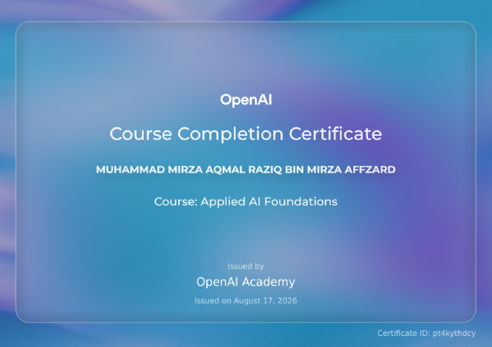
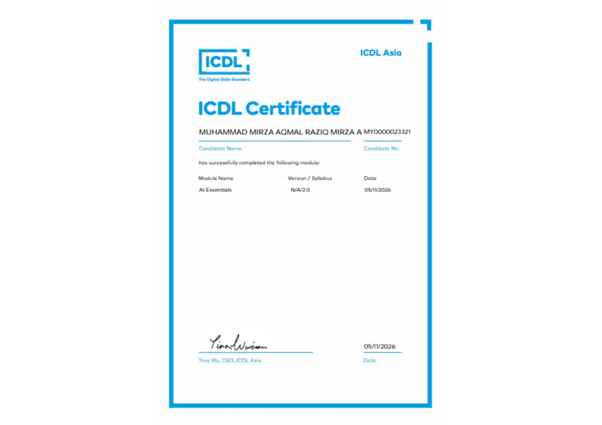

Software Builder & Computer Technology Final Year
Kolej Vokasional Perdagangan Johor Bahru • Pasir Gudang, Johor
I am a final-year student in Diploma Teknologi Komputeran at Kolej Vokasional Perdagangan Johor Bahru. I love engineering practical tools that bridge physical hardware with deep learning — like building real-time facial recognition attendance using ESP32-CAM and FAISS, and training computer vision models on custom annotated datasets with YOLO.
Test My Engineering in Action
Click the simulator buttons to experience how my facial recognition pipeline and YOLO models execute in real-time.
Academic & Vocational Excellence
Rigorous coursework performance, national vocational skill standards, and competitive track record.
Diploma Teknologi Komputeran
Kolej Vokasional Perdagangan Johor Bahru (KVPJB)
SKM Level 3 & Industry Certs
Application Development (JPK) • OpenAI Academy (x3) • Cisco • ICDL
Software Dev, AI Agents & Networks
State & National Recognitions

Johan State 3rd
National
3rd
National
 5th
Podcast
5th
Podcast
Champion Johor Android, 3rd MMU National, 5th PETAH MADANI.
Trophies →5-Month IT Internship Placement
Ready to deploy into software development, web engineering, computer vision, or network operations.
ESP32-CAM & Vision
Embedded microcontrollers connected to deep learning models and sub-second vector search.
Bilingual & Podcaster
Bahasa Melayu (Native), English (Good working proficiency). National PETAH MADANI podcast finalist.
Featured Engineering Projects
Complete codebases with open GitHub repositories, hardware pinouts, and system architectures.
SmartAttend KVPJB
Facial Recognition Attendance Management System

Institutional attendance management system built with Python Flask and MySQL/MariaDB. Uses InsightFace (ArcFace) and FAISS for sub-second 512D facial vector similarity matching, integrated with ESP32-CAM edge hardware for real-time capture and automated student check-in logs.
Electronics & PC Object Detection
YOLO Computer Vision Model with Roboflow

Computer vision object detection model trained on bespoke annotated computer components (motherboards, GPUs, CPUs, RAM, power supplies) via Roboflow and Google Colab using Python and YOLO. Automates inventory counting and hardware auditing.
Technical Competencies
Hands-on practical development experience across frontend, backend, databases, hardware, and networking.
Object-oriented design, algorithmic structures, backend data processing, and scripting.
RESTful API design, MVC patterns, template engines, and responsive user interfaces.
Certified desktop graphical user interfaces, event handlers, and Android mobile development.
Relational schemas, foreign key normalization, indexing, and transactional data integrity.
Object detection pipelines, multi-step autonomous agent workflows, ArcFace 512D embeddings, FAISS vector indexing, and dataset augmentation.
Subnet allocation, VLAN configurations, routing tables, and network troubleshooting.
Defensive coding hygiene, binary decompilation fundamentals, and network defense principles.
Credentials & Recognitions
All credentials verified through official institutional records, including national vocational accreditations, OpenAI certifications, and competition podiums.

SKM Tahap 3 (Level 3)
National vocational skills qualification certifying software development, systems analysis, algorithm engineering, and relational database implementation.

AI Foundations
Certified foundational knowledge in large language model mechanics, attention mechanisms, tokenization pipelines, prompt techniques, and responsible AI practices.
Agents and Workflows
Advanced certification in autonomous agent architectures, dynamic tool invocation, structured JSON schemas, function calling, and deterministic multi-agent state machines.

Applied AI Foundations
Practical engineering accreditation focusing on operational AI pipelines, context management, semantic retrieval integration, and production application deployment.

ICDL – AI Essentials
International certification certifying practical applications of artificial intelligence, ethical considerations, and productivity automation.
Cisco IT Essentials
Hardware maintenance, operating systems diagnostics, IP addressing, routing fundamentals, and enterprise IT troubleshooting.
Fifth Place (National Level)
Recognized nationally at Putrajaya International Convention Centre for articulate technology storytelling, voice delivery, and public communication.
Consolation Prize (Johor Zone Level)
Fast-paced engineering challenge building full-stack web solutions under strict WorldSkills criteria.
1st Runner-Up / 2nd Place
Secured 2nd place in campus-wide web showdown evaluating frontend styling, PHP backend logic, and database schemas.
Third Place (National Level)
National engineering showdown evaluating Android mobile application development, algorithmic implementation, and UX design.
Champion / 1st Place (Johor State Level)
Awarded First Place Champion across the State of Johor for mobile architecture, user interface concept design, and working application prototype.
Head of Multimedia & Documentation Bureau
Led multimedia production, event photography, videography editing, and official institutional program documentation.
Bengkel "AI in Video Resume"
Generative media workflows, video synthesis, and modern portfolio presentation techniques.
Program Pemantapan Pengaturcaraan JS
Asynchronous JavaScript, DOM manipulation, promises, and modern ES6+ application architectures.
Residential College Committee Member
Coordinated student residential affairs, technical logistics, and community activities.
Final Cut Pro Workshop x Merdeka Vibes
Digital video production, color grading, audio synchronization, and visual pacing.
Let's discuss my 5-Month IT Internship.
I am actively interviewing with software engineering and technology teams. Whether you are looking for a dedicated full-stack developer, Python trainee, or systems assistant, I am excited to contribute.